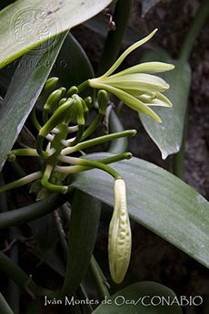
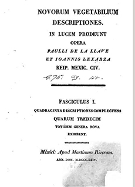

Referencias
- De la Torre, S.L. et.al. 2001. Estudio introductorio. En: Pi-Suñer, L.A. (coord.) México en el diccionario universal de historia y de geografía, Vol II. Ciencia y tecnología. Universidad Nacional Autónoma de México. 342 pp.
- Huerta, J. A. 1999. Pablo de la Llave, un ilustrado entre dos siglos y dos mundos. Llull 22(44): 421-430.
- Cuevas, C.M. de C. y C. López. 2009. Cambios de gobierno en la vida de un botánico mexicano: Maximino Martínez (1888-1964). HMex LVIII (3): 973-1004.
- Sierra, J., et. al. 1985. Antología del Centenario: Estudio documentado de la literatura mexicana durante el primer siglo de independencia (1800-1821), Primera Parte. Nueva biblioteca mexicana. Universidad Nacional Autónoma de México, Imprenta Universitaria 1935-1985.
Pablo de la Llave
1773 – 1833
Soy jarocho de nacimiento, nací en la ciudad de Córdoba, Veracruz en el año de 1773. Cuando tenía 12 años perdí a mi papá quien era capitán en México al servicio del rey español. Mi hermano mayor siempre me apoyó en mis estudios y me envió a estudiar a la ciudad de México llamada en aquellos tiempos la “Ciudad de los Palacios”, por sus enormes y elegantes edificios. Estudié en el Colegio de San Juan de Letrán, creado desde 1548, que estaba en las calles que ahora se llaman Venustiano Carranza y Madero del Centro Histórico de la Ciudad de México.
A la edad de 28 años siendo sacerdote y habiendo impartido clases de filosofía tomé un barco rumbo a España con la finalidad de seguir estudiando. Estando allá, sentí curiosidad por los distintos conocimientos escritos en otros idiomas así que estudié francés, luego hebreo y después algunos idiomas llamadas “lenguas muertas”. Pero sin duda lo que más me fascinó fue el estudio de las plantas al cual dediqué gran parte de mi tiempo.
Entre los años de 1811 y 1812 fui alumno y amigo del renombrado naturalista novohispano José Mariano Mociño, quien residía en España desde xxxx. Pasábamos los días en Madrid clasificando y nombrando científicamente a las plantas procedentes de la Real Expedición Botánica de la Nueva España (México) de 1787 a 1803 que se rescataron cuando el imperio francés invadió España. También ordenamos las aves del Real Gabinete de Historia Natural de Madrid. ¡Era sorprendente ver aves tan coloridas originarias de África, centro y sur América!Fui nombrado director del Real Jardín Botánico de Madrid e incluso di algunas clases de botánica.
Años más tarde en España fui electo diputado representando a mi país de origen en la Corte Real, pero cuando los españoles se enteraron que apoyaba las ideas de independencia de México, me persiguieron. Un día me encontraron y me hicieron prisionero. Mientras tanto en México la mitad de mi fortuna se utilizó para financiar la independencia de México llevada a cabo por Don José María Morelos y Pavón.
Finalmente llegué a México en el año de 1823 a través de Francia ya que no había relaciones entre España y México. Aquí dividí mi vida entre cargos políticos, eclesiásticos y el estudio por las plantas que llamaba mucho mi atención.
Me parecía interesantísimo darle nombre a la flora, así que realice un estudio de las orquídeas de Michoacán, una descripción de líquenes. También investigué a las hormigas de la miel y algunas aves. En todas ellas descubrí nuevos géneros y especies.
Fui director del Museo Nacional de Historia Natural de México en 1831 y del Jardín Botánico del Palacio Nacional. Dediqué el nombre científico del quetzal (Pharomachrus moccino) a mi gran amigo y maestro José Mariano Moccino. Además dediqué junto con Juan Martínez de Lejarza algunos géneros de plantas a la memoria de nuestros caudillos de la independencia como: Hidalgoa, Allendea, Abasoloa, Casimiroa y Morelosia.
El género Gomezia lo dediqué a Juan Antonio Gómez originario de Cantabria España quien introduce en Orizaba, Veracruz el cultivo de los mangos y el café.
Fui miembro de varias sociedades científicas y literarias de Europa.
A principios del año de 1833 fui llevado a la Ciudad de Córdoba Veracruz con la finalidad de encontrar el alivio a una extraña enfermedad en el estómago, pero todo fue inútil. Dejé mi país para siempre en junio de ese año.
Mis favoritos
- 
- Orquídeas de Michoacán
- Vainilla (Vainilla planifolia)
Foto: Iván Montes de Oca / Banco de imágenes, CONABIO
Mis lugares
Mis ideas
- 
- Novorum vegetabilium descriptiones. Pablo de la Llave, Juan Martínez de Lexarsa. Volúmen 1
Fuente: Archive.org